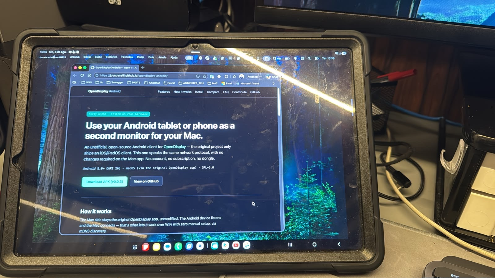
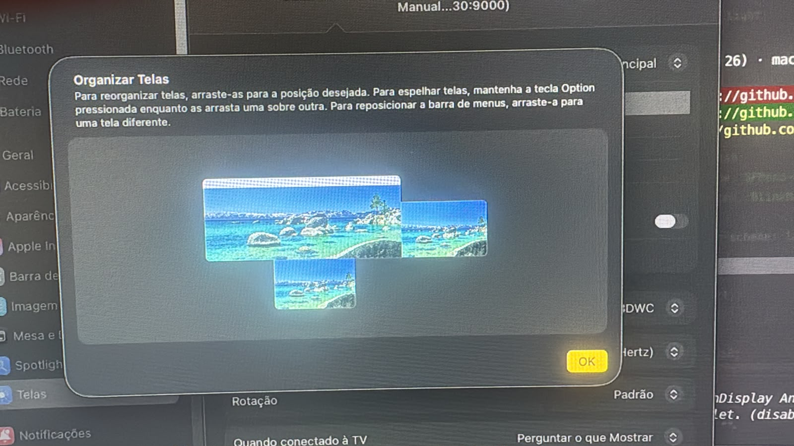

An unofficial, open-source Android client for OpenDisplay — the original project only ships an iOS/iPadOS client. This one speaks the same network protocol, with no changes required on the Mac app. No account, no subscription, no dongle.
The Mac side stays the original OpenDisplay app, unmodified. The Android device listens and the Mac connects — that's what lets it work over WiFi with zero manual setup, via mDNS discovery.
Real hardware, real WiFi connection — no staged mockups.


Two sides, two roles.
Captures a virtual display and streams the video. It's the original OpenDisplay program, unmodified.
peetzweg/opendisplay →Receives the video and sends touch/scroll back. A debug APK is available on the releases page, or build it from source.
Download APK →What already works today, validated against the real Mac app.
MediaCodec decoding straight to a Surface, no CPU conversion.
mDNS (_opensidecar._tcp) — the Mac finds the Android device on its own on the same network.
One finger becomes a click/drag, two fingers become scroll.
A dot or decoded sprite, mirroring the Mac's cursor.
Survives the app going to background and resumes correctly after unlocking the screen.
Decoder errors trigger an automatic keyframe request, without dropping the connection.
Editable mDNS name and IP:port connection for when automatic discovery fails.
adb forwardNo dependency on usbmuxd — the same TCP transport WiFi already uses, over the cable.
Same philosophy as the original project: no central server.
Against the best-known alternatives for using an Android tablet as an external monitor.
| OpenDisplay Android | Duet Display | Spacedesk | |
|---|---|---|---|
| Price | Free | Paid | Free (core) |
| Open source | GPL-3.0 | No | No |
| Account required | No | Yes | No |
| Same protocol as OpenDisplay Mac | Yes | No | No |
| Central server | None | Yes | No |
No. It's an independent client, written from scratch in Kotlin, that implements the same network protocol to interoperate with the original Mac app. The official project only ships an iOS/iPadOS client.
Not yet. The current version is a debug APK distributed via GitHub Releases — install it
with adb install or by copying the APK to the device (enable "unknown
sources").
It works over WiFi with automatic mDNS discovery. You can also connect over USB via
adb forward, reusing the same TCP path — see the repository for instructions.
Requires Android 8.0 (API 26) or higher. Tested on real hardware (Samsung Galaxy Tab, Android 16), but not yet across a wide range of devices — touch/scroll/cursor are implemented but with limited field validation so far.
No. The Mac side stays the original OpenDisplay app, with no modification whatsoever — any protocol mismatch is this project's responsibility, not upstream's.
GPL-3.0, same as the original project. Open source, free to use including commercially; distributed modified versions must remain open source under the same license.
Issues, bug reports and pull requests are welcome on the GitHub repository, which also has the architecture, protocol and build details.